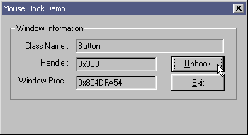

| Sulaiman Chang Personal Website |
|
Tutorial 24 : Windows Hooks
code for tut_24a.asm
format PE GUI 4.0 DLL
entry DllMain
include '%fasminc%\win32a.inc'
struct MOUSEHOOKSTRUCT
.pt POINT
.hwnd dd ?
.wHitTestCode dd ?
.dwExtraInfo dd ?
ends
WMU_MOUSEHOOK equ WM_USER + 6
section '.data' data readable writeable
insH dd ? ;handle for instance
section '.sdata' readable writeable shareable
hookH dd ?
wndH dd ?
section '.code' code readable executable
proc DllMain, hinstDll, fdwReason, lpvReserved
push [hinstDll]
pop [insH]
mov eax,TRUE
return
endp
proc mouse_procedure,nCode,wParam,lParam
invoke CallNextHookEx,[hookH],[nCode],[wParam],[lParam]
mov edx,[lParam]
invoke WindowFromPoint,[edx + MOUSEHOOKSTRUCT.pt.x],[edx + MOUSEHOOKSTRUCT.pt.y]
invoke PostMessage,[wndH],WMU_MOUSEHOOK,eax,0
xor eax,eax ;must clear eax here
return
endp
proc mouse_hook_install,wndTempH
push [wndTempH]
pop [wndH]
invoke SetWindowsHookEx,WH_MOUSE,mouse_procedure,[insH],NULL
mov [hookH],eax
return
endp
proc mouse_hook_uninstall
invoke UnhookWindowsHookEx,[hookH]
return
endp
section '.idata' import data readable
library USER32, 'USER32.DLL'
import USER32,\
CallNextHookEx, 'CallNextHookEx',\
WindowFromPoint, 'WindowFromPoint',\
PostMessage, 'PostMessageA',\
SetWindowsHookEx, 'SetWindowsHookExA',\
UnhookWindowsHookEx, 'UnhookWindowsHookEx'
section '.edata' export data readable
export 'TUT_24A.DLL',\
mouse_procedure, 'mouse_procedure',\
mouse_hook_install, 'mouse_hook_install',\
mouse_hook_uninstall, 'mouse_hook_uninstall'
section '.reloc' fixups data discardable
code for tut_24b.asm
format PE GUI 4.0
entry start
include '%fasminc%\win32a.inc'
WMU_MOUSEHOOK equ WM_USER + 6
DLG_MAIN equ 101
EDIT_CLSNAME equ 1001
EDIT_HANDLE equ 1002
EDIT_WNDPROC equ 1003
BTN_HOOK equ 1004
BTN_EXIT equ 1005
section '.data' data readable writeable
insH dd ?
wndClsName db 'TUT_24B',0
wndTitle db 'Tutorial 24B',0
wndCls WNDCLASS
wndMsg MSG
hookFlag dd FALSE
hookH dd ?
rect RECT
txtUnhook db '&Unhook',0
txtHook db '&Hook',0
buf1 rb 128
buf2 rb 128
f1 db '0x%lX',0
section '.code' code readable executable
start:
invoke GetModuleHandle,NULL
mov [insH],eax
invoke DialogBoxParam,eax,DLG_MAIN,NULL,dialog_procedure,NULL
invoke ExitProcess,0
proc dialog_procedure,hDlg,uMsg,wParam,lParam
push ebx esi edi
cmp [uMsg],WMU_MOUSEHOOK
je wmuMOUSEHOOK
cmp [uMsg],WM_CLOSE
je wmCLOSE
cmp [uMsg],WM_INITDIALOG
je wmINITDIALOG
cmp [uMsg],WM_COMMAND
je wmCOMMAND
jmp wmBYE
wmCLOSE:
cmp [hookFlag],TRUE
jne @f
invoke mouse_hook_uninstall
@@:
invoke EndDialog,[hDlg],NULL
jmp wmBYE
wmuMOUSEHOOK:
invoke GetDlgItemText,[hDlg],EDIT_HANDLE,buf2,128
invoke wsprintf,buf1,f1,[wParam]
invoke lstrcmpi,buf1,buf2
cmp eax,0
je @f
invoke SetDlgItemText,[hDlg],EDIT_HANDLE,buf1
@@:
invoke GetDlgItemText,[hDlg],EDIT_CLSNAME,buf2,128
invoke GetClassName,[wParam],buf1,128
invoke lstrcmpi,buf1,buf2
cmp eax,0
je @f
invoke SetDlgItemText,[hDlg],EDIT_CLSNAME,buf1
@@:
invoke GetDlgItemText,[hDlg],EDIT_WNDPROC,buf2,128
invoke GetClassLong,[wParam],GCL_WNDPROC
invoke wsprintf,buf1,f1,eax
invoke lstrcmpi,buf1,buf2
cmp eax,0
je @f
invoke SetDlgItemText,[hDlg],EDIT_WNDPROC,buf1
@@:
jmp wmBYE
wmINITDIALOG:
invoke GetWindowRect,[hDlg],rect
invoke SetWindowPos,[hDlg],HWND_TOPMOST,[rect.left],[rect.top],[rect.right],[rect.bottom],SWP_SHOWWINDOW
jmp wmBYE
wmCOMMAND:
cmp [lParam],0
je wmBYE
mov eax,[wParam]
mov edx,eax
shr edx,16
cmp dx,BN_CLICKED
jne wmBYE
cmp ax,BTN_EXIT
je wmCOMMAND_BTN_EXIT
jmp wmCOMMAND_BTN_HOOK
wmCOMMAND_BTN_EXIT:
invoke SendMessage,[hDlg],WM_CLOSE,0,0
jmp wmBYE
wmCOMMAND_BTN_HOOK:
cmp [hookFlag],TRUE
jne BTN_HOOK_FALSE
invoke mouse_hook_uninstall
invoke SetDlgItemText,[hDlg],BTN_HOOK,txtHook
mov [hookFlag],FALSE
invoke SetDlgItemText,[hDlg],EDIT_CLSNAME,NULL
invoke SetDlgItemText,[hDlg],EDIT_HANDLE,NULL
invoke SetDlgItemText,[hDlg],EDIT_WNDPROC,NULL
jmp wmBYE
BTN_HOOK_FALSE:
invoke mouse_hook_install,[hDlg]
cmp eax,NULL
je wmBYE
mov [hookFlag],TRUE
invoke SetDlgItemText,[hDlg],BTN_HOOK,txtUnhook
jmp wmBYE
wmBYE:
pop edi esi ebx
return
endp
section '.idata' import data readable
library KERNEL32, 'KERNEL32.DLL',\
USER32, 'USER32.DLL',\
TUT_24A, 'TUT_24A.DLL'
import KERNEL32,\
GetModuleHandle, 'GetModuleHandleA',\
lstrcmpi, 'lstrcmpiA',\
ExitProcess, 'ExitProcess'
import USER32,\
RegisterClass, 'RegisterClassA',\
CreateWindowEx, 'CreateWindowExA',\
SendMessage, 'SendMessageA',\
wsprintf, 'wsprintfA',\
DialogBoxParam, 'DialogBoxParamA',\
GetWindowRect, 'GetWindowRect',\
GetClassName, 'GetClassNameA',\
GetClassLong, 'GetClassLongA',\
EndDialog, 'EndDialog',\
GetDlgItemText, 'GetDlgItemTextA',\
SetDlgItemText, 'SetDlgItemTextA',\
SetWindowPos, 'SetWindowPos'
import TUT_24A,\
mouse_hook_install, 'mouse_hook_install',\
mouse_hook_uninstall, 'mouse_hook_uninstall'
section '.rsrc' resource data readable
directory RT_DIALOG,appDialog
resource appDialog,\
DLG_MAIN,LANG_NEUTRAL,dlgMain
dialog dlgMain,'Mouse Hook Demo',0,0,229,85,\
WS_CAPTION + WS_POPUP + WS_SYSMENU + DS_MODALFRAME
dialogitem 'BUTTON','Window Information',-1,7,7,214,67,WS_VISIBLE + BS_GROUPBOX
dialogitem 'STATIC','Class Name :',-1,21,22,42,8,SS_LEFT + WS_VISIBLE
dialogitem 'EDIT','',EDIT_CLSNAME,69,20,139,12,ES_LEFT + ES_AUTOHSCROLL + ES_READONLY + WS_VISIBLE + WS_BORDER + WS_TABSTOP
dialogitem 'STATIC','Handle :',-1,36,37,28,8,SS_LEFT + WS_VISIBLE
dialogitem 'EDIT','',EDIT_HANDLE,69,36,76,12,ES_LEFT + ES_AUTOHSCROLL + ES_READONLY + WS_VISIBLE + WS_BORDER + WS_TABSTOP
dialogitem 'STATIC','Window Proc :',-1,15,52,48,8,SS_LEFT + WS_VISIBLE
dialogitem 'EDIT','',EDIT_WNDPROC,69,52,76,12,ES_LEFT + ES_AUTOHSCROLL + ES_READONLY + WS_VISIBLE + WS_BORDER + WS_TABSTOP
dialogitem 'BUTTON','&Hook',BTN_HOOK,159,35,50,14,BS_DEFPUSHBUTTON + WS_VISIBLE + WS_TABSTOP
dialogitem 'BUTTON','&Exit',BTN_EXIT,159,51,50,15,BS_PUSHBUTTON + WS_VISIBLE + WS_TABSTOP
enddialog
Result : |
| Copyright © 2004 Sulaiman Chang. All Rights Reserved. |